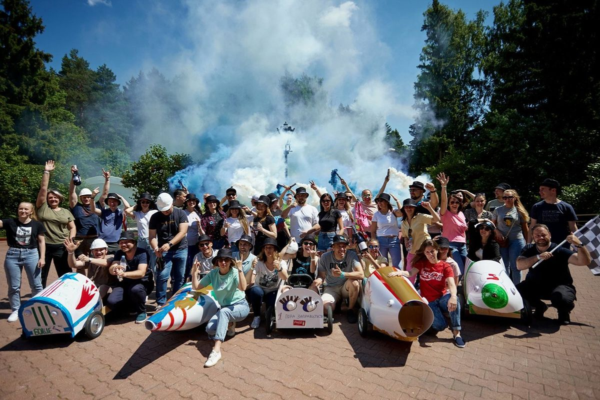
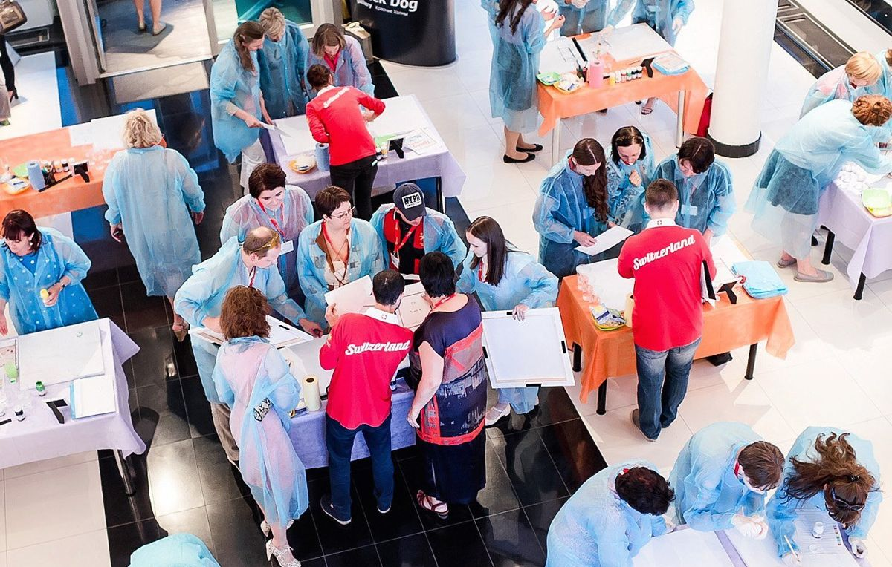
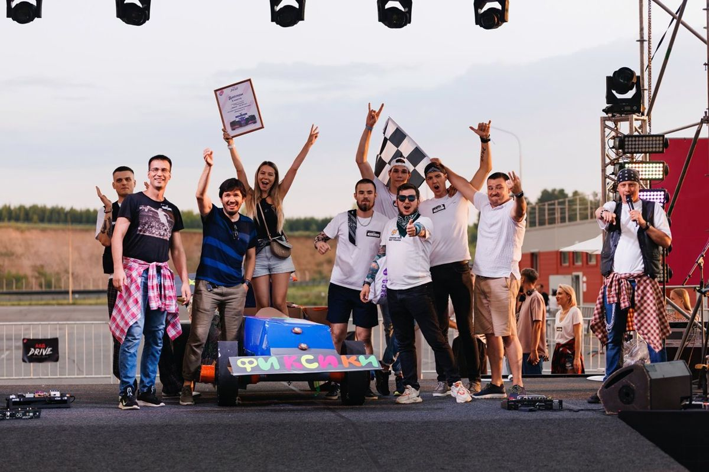

Тимбилдинг для адаптации: как познакомить новичков с коллегами и проверить результат
Тимбилдинг для адаптации помогает новичкам познакомиться с коллегами, к которым они смогут обратиться по работе. Для этого соберите в каждой команде новых и опытных сотрудников из разных отделов и дайте им одну общую задачу.

С 2010 года наше агентство провело больше 5 000 проектов для групп от 50 до 3 000 человек. У нас больше 50 своих программ и 16 наград ивент-индустрии. Покажу, как собрать командный день под три задачи HR: адаптацию, вовлечённость и удержание.
Как поставить задачу на командный день
Заявка часто звучит так: «Хотим тимбилдинг на 100 человек, что-нибудь интересное». Из такой заявки ведущий узнает число участников. Чтобы собрать программу, ему нужна цель встречи.
Перед выбором формата ответьте на три вопроса:
- Какую проблему решаем. Новички не встраиваются, отделы не общаются, команда устала после тяжёлого проекта.
- Кто участвует. Сколько новичков, какие отделы, кто из руководителей.
- Что изменится через месяц и как это увидеть. Об этом подробно в разделе про замер.
Разница в формулировке видна сразу. Плохо: «сплотить коллектив». Хорошо: «чтобы 40 человек, пришедших за полгода, знали в лицо коллег из смежных отделов и могли к ним обратиться без посредников». Под вторую задачу ведущий соберёт команды и сценарий иначе, чем под первую.
Адаптация: собираем смешанные команды
На встрече дайте участникам повод обратиться друг к другу. Например, один коллега читает чертёж, другой собирает детали, а третий проверяет, что получилось.
Работает это при двух условиях. Первое: команды собираем заранее по списку от HR, в каждой новички вперемешку с опытными сотрудниками из разных отделов. Если люди разобьются сами, новички окажутся вместе и поговорят друг с другом. Второе: в задании роли распределены так, что одному не справиться.
Пример механики. Для компании Wilo мы провели «Гонки Формула-1» на 350 сотрудников. Задача была праздничная, но устройство игры то же. Команды собирали собственные болиды, в каждой команде было 10 ролей, люди становились инженерами, конструкторами, дизайнерами, гонщиками и болельщиками. Чтобы болид выдержал техническую проверку жюри и три технических круга, людям пришлось договариваться. Собрали больше 50 болидов, на старт вышли все команды. Подробности и фото в кейсе гонок для Wilo.


Замера удержания по этому проекту у нас нет. А если вы выстраиваете систему целиком, у нас есть разбор, где этапы адаптации новых сотрудников расписаны от первого дня до конца испытательного срока.
Вовлечённость: показываем вклад каждой команды
Выберите задание, в котором вклад каждой команды виден в общем результате.
В одном из проектов участники собрали картину из 16 секций. Каждая команда писала свою часть полотна. Фотографии и описание задачи есть в кейсе «Корпоративная картина». Целиком картину до финала не видит никто. Линии должны совпасть на стыках, а цвета по тону, поэтому команды всё время сверяются с соседями. В финале секции соединяют, и получается одна картина.


Для HR здесь важны две вещи. Задание повторяет реальную работу: у каждого свой участок, а результат общий. И картина остаётся в офисе: к ней можно вернуться на планёрке, когда отделы опять не могут договориться.
Удержание: связываем встречи в течение года
Один праздник в год людей не удержит. Работает связка событий, которые идут по году:
- Встреча для новичков в первые месяцы работы.
- Командный день после большого проекта или реорганизации.
- Общий праздник, например новогодний корпоратив.
Связка работает, когда каждое событие продолжает предыдущее. На командном дне участвуют те же смешанные группы, что на встрече для новичков, и знакомство не обнуляется.

На каждой встрече назовите заслуги коллег. Руководитель называет конкретных людей и конкретные дела, а не благодарит «всех за отличный год».
Внутренним коммуникациям советую с первого дня договориться о фото и видео. Снимки с ивента потом работают месяцами: во внутреннем канале, в материалах для кандидатов, на карьерной странице. Подборку форматов под разные задачи мы собрали на странице про программы тимбилдинга для сотрудников.
Что проверить через месяц
| Задача HR | Действие на встрече | Что спросить через месяц |
|---|---|---|
| Адаптация | Дайте новичкам и опытным коллегам общую задачу. | К кому из соседнего отдела вы можете обратиться с рабочим вопросом? |
| Вовлечённость | Дайте командам по части задания и соберите общий результат. | Как ваша часть работы влияет на результат команды? |
| Удержание | Позовите смешанные группы на следующую встречу и отметьте конкретный вклад людей. | С кем из коллег со встречи вы продолжили общаться по работе? |
Дополните ответы цифрами.
- Короткий опрос до и после. Три вопроса за неделю до ивента и те же через месяц. Например: «Знаю, к кому обратиться в соседнем отделе», «Мне комфортно задать вопрос коллеге не из моей команды», «Понимаю, как моя работа влияет на результат компании». Шкала от 1 до 5.
- Испытательный срок. Сравните, какая доля новичков прошла его до и после того, как вы добавили встречу для новичков. Сравнивайте группы с похожими условиями работы.
- eNPS. Если вы его уже меряете, отметьте дату ивента и посмотрите на следующий замер.
Главное правило: первый замер делайте до ивента. Если начать после, сравнивать будет не с чем.
Когда тимбилдинг не поможет
Бывают случаи, когда тратить на него бюджет не стоит. Если люди уходят из-за зарплаты, перегрузки или конфликта с руководителем, сначала разберитесь с причиной.
Если планируете встречу на выходных, заранее спросите сотрудников, готовы ли они участвовать.
Шпаргалка для HR
- Сформулируйте задачу одной фразой: кто и что должен начать делать иначе.
- Сделайте замер до ивента.
- Соберите команды сами: новички вперемешку с опытными, отделы вперемешку.
- Выберите задание, где одному не справиться и есть общий итог.
- Добавьте в программу признание конкретных людей.
- Через месяц повторите замер и покажите руководству разницу.
Позовите в подготовку двух-трёх сотрудников из разных отделов. Они помогут собрать команды и объяснить коллегам, зачем нужна встреча.